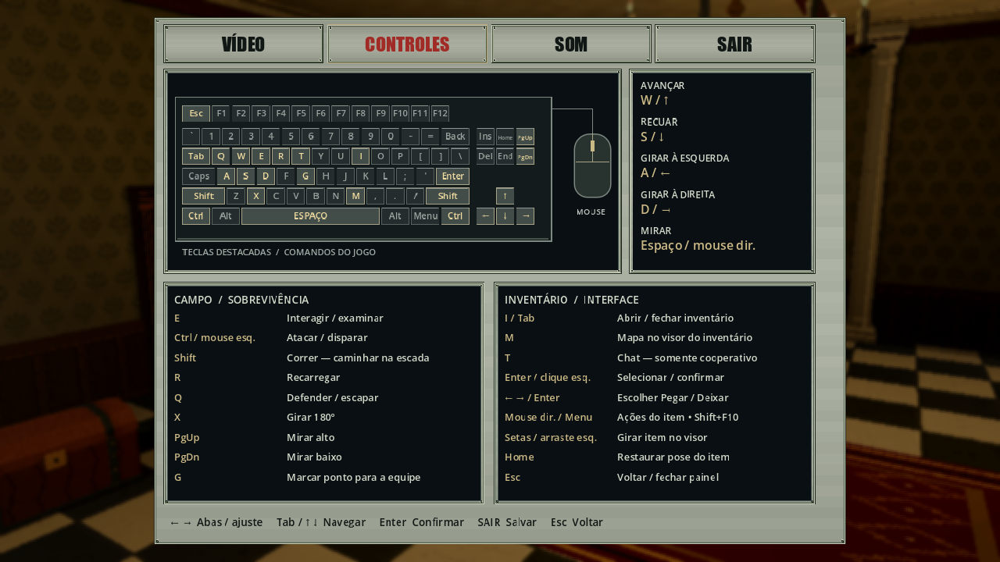
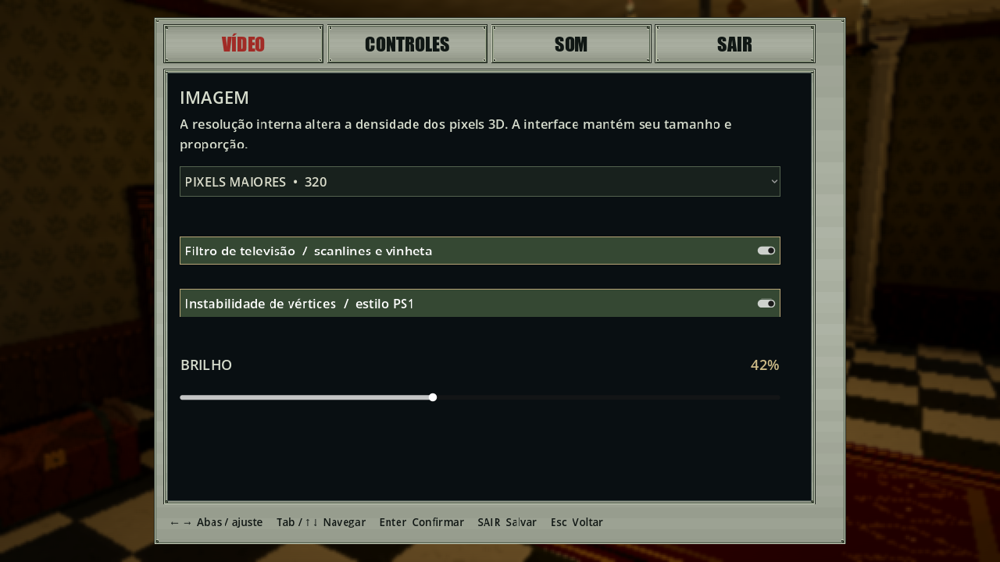
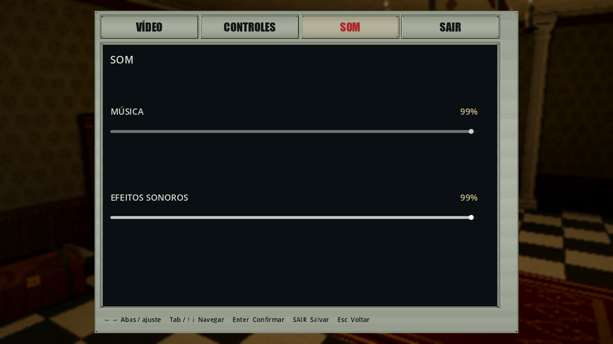

Configurações · 15/10/2026
Histórico substituído nesta data: Configurações e controles editáveis documentam Esc/SAIR salvando, edição de teclas, W/S/roda e campos simplificados. O relato e as imagens abaixo preservam a rodada anterior de 197 checks.
Painel de metal reutilizado do inventário, com telas escuras, letras pequenas, teclado/mouse desenhados na própria UI e tabelas dos comandos reais. Abre em CONTROLES. As abas foram traduzidas para VÍDEO, CONTROLES, SOM e SAIR; subtítulos redundantes e os dois textos explicativos inferiores foram removidos. O rodapé usa tinta escura contrastante sobre metal claro e ocupa apenas uma linha; o conteúdo ganhou altura e espaçamento.
| Aba | Conteúdo |
|---|---|
| VÍDEO | Resolução interna 640/320, CRT, instabilidade de vértices e brilho |
| CONTROLES | Teclado/mouse, movimento tanque, combate, inventário e interação |
| SOM | Volumes de música e efeitos sonoros |
| SAIR | Salva as seis preferências existentes e volta ao menu Esc |
Setas esquerda/direita alternam as abas com foco no cabeçalho; Tab ou cima/baixo navegam pelos campos. Enter confirma; setas ajustam os sliders. Mouse também seleciona e arrasta. Os ajustes são aplicados ao vivo; Esc retorna sem gravar as preferências no disco. O desenho informa comandos, sem remapeamento de teclas.



Capturas originais do Godot em 1280×720, com input sintético dirigido.
Proveniência e hashes em media-manifest.json; também no acervo público.
Pausa e integração
No solo offline, o mundo continua pausado durante as trocas de aba e ao retornar ao menu Esc; cenário escurecido/desfocado e BGM temporariamente abafada, sem parar a reprodução. No host e no cliente cooperativo, apenas escurecimento: autoridade, relógio e áudio continuam ativos. Ao sair da pausa ou desconectar, os efeitos locais são removidos.
SettingsPanel constrói o painel, SettingsMenu integra GameUi/GameOptions,
ControlGuide consulta o InputMap para os comandos de gameplay e
KeyboardDiagram desenha o teclado. Ações específicas de inventário e inspeção
acompanham os handlers reais: setas/arraste para girar, Home para restaurar pose,
esquerda/direita e Enter para Pegar/Deixar. PauseMenu.EnsurePausePresentation
compartilha o backdrop existente. Não há alterações de Core, protocolo,
schema de campanha, fontes de áudio, modelos 3D, câmeras ou tetos nesta tarefa.
Validação e limites
Base Git local e059383, com alterações não commitadas e outros trabalhos
preexistentes preservados; não identifica uma release nem a revisão final.
Fixture Tools/PauseMenuAcceptance.tscn com --settings-suite: 197 checks
aprovados no App renderizado, com teclado/mouse sintéticos e ENet localhost.
Incluem solo, host com segundo humano simulado e App cliente de autoridade
dedicada, abas/campos, preferências salvas, retorno, comparação de blur/dim,
mixer real, confirmação/cancelamento/desconexão e descarte do bus de música.
Renders em 16:9 e 4:3 conferidos visualmente. Preferências pessoais são
preservadas em memória e restauradas no finally da fixture.
Durante a ampliação, o driver do seletor de resolução enviava teclas ao
viewport sem passar pelo callback da janela nativa. Corrigido para
Input.ParseInputEvent, direcionado ao popup. O caminho corresponde ao
despacho de eventos do Godot no Windows
e ao tratamento de teclado do
PopupMenu.
O teste do rodapé considera a altura mínima da fonte, preservando os glifos.
Também passaram 77 CoreTests, 16 checks Python, build C# sem erros ou
avisos e importação Godot. Logs locais Build/settings-acceptance-portuguese-final.log,
settings-core.log, settings-python.log, settings-build.log e
settings-import-final.log; capturas e mixer em Build/settings-panel-2026-10-15/.
Portal/galeria e manifestos são regenerados e verificados junto à entrega.
Sem controles físicos, audição crítica, campanha completa, Internet, exports ou profiling nesta rodada. Não equivale à homologação geral de multiplayer. Não houve alteração de rede/save que exigisse repetir o smoke/matriz completos; foram executados os cenários ENet dirigidos acima.